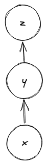
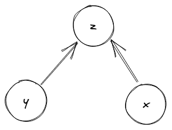
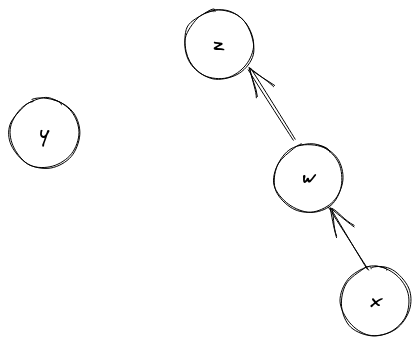
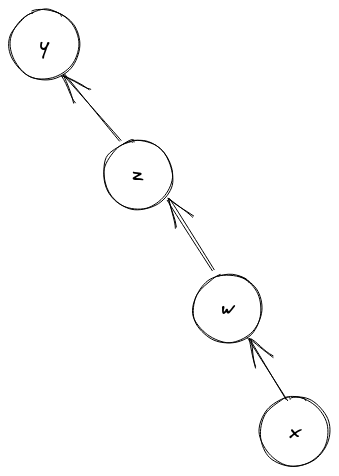

OCaml로 PS 하기 -6-
서로소 집합
최애 언어 OCaml로 알고리즘 문제를 풀어보는 시리즈 여섯 번째 글이다.
서로소 집합
서로소 집합(Disjoint Set, 또는 Union-Find)은 이름이 뜻하는 그대로 서로소인 성질을 갖는 집합이다. 여기에 속한 원소 각각은 중복되지 않는 유일한 값(집합)이지만, 공통 원소가 없는 부분 집합(서로소)으로 원소를 분할할 수 있는 자료구조이다. 세 가지 핵심 연산을 제공해야 하는데,
합치기(Union): 두 원소가 속한 서로소 부분 집합을 합쳐서 하나의 서로소 부분 집합으로 만든다.찾기(Find): 어떤 원소가 속한 서로소 부분 집합을 구한다.만들기(MakeSet): 원소 하나만 가지는 서로소 부분 집합을 만든다.
이때 합치기 연산은 두 원소를 합치는 것이 아니라, 원소가 속한 서로소
부분 집합 자체를 합치는 것이다. 따라서 합치기 연산 이후에 두
원소에 대한 찾기 연산의 결과는 같아야 한다.
그럼 이걸 어디다 쓸 수 있을까? 위키백과에 따르면 어떤 집합의 분할(partitioning)을 모델링할 수 있다고 한다. 그리고 심볼 표현식으로 구성된 방정식을 푸는 알고리즘인 Unification을 구현하는 데에도 쓰인다1. 그 외에도 여러 현실 문제를 모델링하여 해를 구하는 데에 쓰인다2.
구현
서로소 집합의 구현은 Parent point tree라고 불리는 자료구조를 따른다. 이름 그대로 부모를 가리키는 트리이다. 우리에게 익숙한 트리는 부모가 자식을 가리키는 하향식의 트리이지만, 이건 그 반대의 개념이다. 아무런 최적화를 하지 않는다면 이 구조를 그대로 사용하면 되고, 성능을 개선하고 싶다면 여기에 추가적인 정보를 더 유지하여 활용한다. 참고로 아무런 최적화가 없다면 이 트리는 입력에 따라 아주 불균형한 트리를 만들 수 있기 때문에, 링크드 리스트와 다를 바 없다.
보통 알고리즘 문제에서는 서로소 집합에 담을 원소가 정수로도 충분히 모델링 가능하도록 문제가 나오기 때문에, 대부분은 (1) 정수형 배열을 이용하여 원소가 속한 서로소 집합의 대표 원소를 관리하도록 구현한다. 이렇게하면 속도 측면에서는 이득을 얻지만 원소의 타입에 대한 일반성을 잃는다. 그래서 정수로 표현할 수 없는 원소인 경우에는 (2) 해시 테이블(파이썬에서는 딕셔너리)로 구현을 하기도 한다. 그 외에 제네릭한 라이브러리의 경우 말 그대로 (3) 부모를 가리키는 포인터 트리로 구현하기도 한다3.
1717번: 집합의 표현
“서로소 집합이 뭔지 알고, 구현할 수 있니?”를 묻는 문제다. 위에서 설명한 세 가지 방법으로 구현해보자.
정수형 배열로 구현하기
가장 기본이 되는 정수형 배열로 먼저 구현해보자.
MakeSet(x):x가 하나뿐인 서로소 집합을 만들면 된다. 즉,x의 대표 원소가x가 되게끔 하면 된다. 참고로, 배열로 구현하는 경우에는 그냥 배열의 초기값을 그 인덱스로 잡아버리면MakeSet연산을 한 것과 동일하다.Find(x):x의 대표 원소를 배열에서 찾으면 된다.Union(x, y):x의 대표 원소와y의 대표 원소가 같도록 만들면 된다. 예를 들어x를 중심으로 생각하면,x의 대표 원소를y의 대표 원소로 업데이트한다.
이 아이디어를 코드로 옮기면 다음과 같다.
let make_set root x = root.(x) <- x (* Array.init을 활용한다면 필요없는 연산 *)
let rec find root x =
if root.(x) = x then x else find root root.(x)
let union root x y =
let px, py = find root x, find root y in
if px = py then () else root.(px) <- py
union 연산에서는 px 하나의 부모를 업데이트하기 때문에, find
연산이 제대로 동작하려면 root.(x)가 변하지 않을 때까지, 즉 일종의
Fixed point에 도달할 때까지 거슬러 올라가야 한다.
이건 올바른 구현이지만, 아무런 최적화가 없기 때문에 제출 시 시간
초과가 뜬다. 그럼 하나씩 최적화를 해 나아가 보자.
최적화 1 - 경로 압축
서로소 집합에는 유명한 두 가지 최적화가 있는데, 그 중 먼저 경로 압축(Path compression)을 살펴보자.
앞서 말했듯이 입력이 불균형하면 우리가 만든 트리는 아래 그림4처럼
일자로 늘어진 링크드 리스트와 다를 바 없게 된다. 그래서 Find(x)
연산은 결국 링크드 리스트의 길이만큼 y, z를 거슬러 올라가게 된다.

그런데 생각해보면 Find(x) 연산을 하면서 거슬러 올라가는 동안 만나는
모든 친구들의 대표 원소는 궁극적으로는 모두 하나의 대표 원소(위
그림의 z)로 수렴하게 된다. 경로 압축은 이 사실을 이용해서,
Find(x) 연산을 수행할 때마다 거쳐간 모든 친구들의 부모를 바로 이
진짜 부모 노드를 가리키도록 업데이트 하는 것이다. 이를 통해 트리가
링크드 리스트 모양이 아니라 아래와 같이 고르게 평평해질 수 있다.

이 아이디어를 코드로 옮기면 다음과 같다.
let rec find root x =
if root.(x) = x then x
else (
(* path compression *)
root.(x) <- find root root.(x);
root.(x)
)
겨우 두 줄 수정했을 뿐이지만, 엄청나게 빨라진다. 덕분에 68ms로 통과할 수 있었다.
최적화 2 - 랭크로 합치기
두 번째 최적화는 랭크로 합치기(Union by Rank)라는 것이다. 앞의 경로
압축이 찾기 연산에 대한 최적화였다면, 이 최적화는 이름처럼 합치기
연산에 대한 최적화이다.
앞에서 본 것처럼 합치기 연산을 할 때 아무 생각없이 합쳐버리면
일자로 늘어진 링크드 리스트가 된다. 그럼 이걸 좀더 똑똑하게 합칠 수
있는 방법은 뭘까? 아래 그림에서 y와 z를 합치려고 할 때, 즉
Union(y, z) 연산을 할 때,

z를 y에 합치면 다음과 같이 일자로 늘어진 링크드 리스트가
되어버리지만,

y를 z에 합치면 다음과 같이 좀더 균형잡힌 트리를 얻을 수 있다.

즉, 둘 중 더 작은 집합을 더 큰 집합에 합치는 것이다.
이 아이디어를 구현하기 위해서는 랭크라고 하는, 서로소 부분
집합(대표 원소)에서 어떤 정수 값으로 가는 맵을 도입한다. 초기에 모든
서로소 부분 집합의 랭크는 0이다. 같은 랭크 r을 갖는 두 집합이
합쳐지면 랭크가 1 증가한다. 그 외의 경우는 더 작은 랭크를 갖는 집합을
더 큰 랭크를 갖는 집합에 합친다. 이 아이디어를 바탕으로 랭크로 합치기
최적화를 구현하면 다음과 같다.
let union root rank x y =
let px, py = find root x, find root y in
if px = py then ()
else (
(* optimize with union by rank *)
(* make px.rank >= py.rank *)
let px, py = if rank.(px) >= rank.(py) then px, py else py, px in
(* attach smaller one to bigger one *)
root.(py) <- px;
(* increment rank if necessary *)
if rank.(px) = rank.(py) then rank.(px) <- rank.(px) + 1
)
위키피디아에
따르면, 경로 압축과 랭크로 합치기 최적화를 모두 적용하면 시간
복잡도가 역 아커만
함수로
떨어진다고 하며, 이는 큰 입력에 대해서는 거의 상수(5)에 가까운
값이라고 한다. 하지만 이 문제의 경우, 오히려 두 최적화를 모두
적용하니 88ms로 경로
압축만 적용했을 때보다 느렸다. 그리고 랭크로 합치기만 적용했을 때에도
경로 압축만큼 빠르진 않았다. 이 문제 정도의 사이즈에서 배열로 구현할
때에는 경로 압축 최적화만 적용해도 충분한 속도를 보였다.
해시 테이블로 구현하기
파이썬이라면, 배열을 해시 테이블로 바꾸는 일은 trivial하다. 그냥
딕셔너리로 바꿔주기만 하면 된다. OCaml에서는 모듈을 만들어줘야
한다. 따라서 여기서는 해시 테이블을 이용한 DisjointSet
모듈(정확히는 펑터)을 구현해보았다.
module DisjointSet = struct
module type Elt = sig
type t
val equal: t -> t -> bool
val hash: t -> int
end
module Make(Elt: Elt) = struct
type elt = Elt.t
type t = {
root: (elt, elt) Hashtbl.t;
rank: (elt, int) Hashtbl.t;
}
let empty = { root= Hashtbl.create 100; rank= Hashtbl.create 100 }
let make_set t x =
if not (Hashtbl.mem t.root x) then (
Hashtbl.add t.root x x;
Hashtbl.add t.rank x 0)
let rec find t x =
let px = Hashtbl.find t.root x in
if px <> x then
(* path compression *)
Hashtbl.replace t.root x (find t px);
Hashtbl.find t.root x
let rec union t x y =
let px, py = find t x, find t y in
if px = py then ()
else (
(* union by rank *)
let rx, ry = Hashtbl.find t.rank px, Hashtbl.find t.rank py in
let px, py = if rx < ry then py, px else px, py in
Hashtbl.replace t.root py px;
if rx = ry then Hashtbl.replace t.rank px (rx + 1)
)
end
end
- 실제 사용은
module DisjointIntSet = DisjointSet.Make(IntWithHash)와 같이Make펑터로부터 모듈을 만들어서 사용한다. 해시 테이블로 구현했기 때문에hash함수가 필요하다. - 해싱 함수를 호출해야만 하는 로드로 인해서 당연히 배열로 구현한 것보다 느리다. 해당 문제 기준 대략 2~3배 정도의 속도 차이가 났다.
- 경로 압축과 랭크로 합치기 최적화를 모두 적용한 바람직한 구현이지만, 배열로 구현했을 때와 마찬가지로 경로 압축 최적화만 적용했을 때가 더 빠른 성능을 보였다 (168ms vs. 288ms)
부모 포인터 트리로 구현하기
마지막으로 실제 포인터를 이용해서 뒤집어진 트리를
구현해보자. JaneStreet Core_kernel 모듈의
Union_find를
많이 참조했다. 주석을 보니 오리지널은 MLTon의
disjoint.fun인듯
하다.
OCaml의 강점 중 하나는 바로 명령형(Imperative) 스타일을 특별한
복잡함없이 잘 지원한다는 것이다. 기본적으로 OCaml의 모든 변수는 불변
타입이지만, mutable 키워드를 이용해서 레코드의 필드를 가변으로
정의할 수 있다. 또 하나의 값만 가변으로 담을 수 있는 ref 생성자가
있는데, type 'a ref = { mutable content : 'a }로 정의되어 있다. 이
ref에서 값을 빼오거나 업데이트하는 연산은
런타임에
구현되어
있는데, 레코드의 mutable 필드를 조작하는 것과 동일한 의미를 갖는다.
런타임 프리미티브가 좀더 최적화가 잘 되어 있을 거라는 기대를 갖고
여기서는 ref를 이용해서 트리를 구현해보자. 먼저 트리의 노드 타입을
다음과 같이 정의한다.
type node =
| Representative of int ref
| PointsTo of node ref
Representative r은 트리의 대표 원소를 나타내며, 랭크 값r을 담고 있다.PointsTo x는x를 가리키는 재귀적인 타입이다.x가 현재 노드의 부모 노드라는 것을 추상화했다.
잠깐 삼천포로 빠지자면, 여기서는 특별히 대표 원소의 값을 유지할
필요는 없어서 제외했지만, 범용적인 용도의 라이브러리에서는 주로 'a
타입의 값을 담는 mutable 필드를 함께 갖는 레코드로 정의한다. 아마
Unification 알고리즘을 서로소 집합으로 구현하려면 이렇게 값을 담는
필드가 필요할 것으로 생각된다.
이렇게 정의한 타입으로 먼저 만들기 연산을 구현해보자.
let make_set () = ref (Representative (ref 0))
- 랭크 초기값
0을 갖는 대표 원소 하나를 만든다. - 이때 대표 원소 값 자체도
ref로 감싸줘야 한다. 그래야 실제로 가리키는 값을 업데이트하는 연산을 할 수 있다.
다음으로 최적화가 없는 찾기 연산을 구현해보자.
let rec find t =
match !t with
| Representative r -> (t, r)
| PointsTo t' -> find t'
여기서 r이 아니라 (t, r)을 리턴하는 이유는 합치기 연산을
위해서이다.
t는node ref타입으로, 노드가 가리키는 부모 노드를 업데이트 하기 위해서 리턴한다.r은int ref타입으로, 랭크 값을 비교하고 업데이트하기 위해서 리턴한다.
이제 마지막으로 최적화가 없는 합치기 연산은 다음과 같다.
let union t1 t2 =
let t1, r1 = find t1 in
let t2, r2 = find t2 in
if t1 == t2 then () else t1 := PointsTo t2
- 파라미터로 넘어온
t1과t2과 서로 같은 서로소 집합에 속해있는지를 확인해야 하는데, 이때 값이 구조적으로 같은지(structural equaltiy)를 확인하는 게 아니라 실제로 같은 값을 가리키고 있는지(physical equality)를 확인해야 한다. 따라서=가 아니라==연산자로 비교해야 한다5 - 참고로
find로 찾은t와r모두 대표 원소라고 할 수 있는 레퍼런스이므로, 같은지 비교할 때t1 == t2을 써도 되고r1 == r2를 써도 된다.
이렇게 바닐라 구현을 하면 당연하게도 시간 초과가 뜬다. 그럼 또
최적화해보자.
경로 압축
앞의 아이디어를 코드로 옮기면 다음과 같다.
let rec find t =
let rec compress t ~prev ~descendants =
match !t with
| Representative r ->
List.iter (fun n -> n := !prev) descendants;
(t, r)
| PointsTo t' -> compress t' ~prev:t ~descendants:(prev :: descendants)
in
match !t with
| Representative r -> (t, r)
| PointsTo t' -> compress t' ~prev:t ~descendants:[]
먼저 일반적인 트리에서, 어떤 부모 노드에서 출발해서 도달할 수 있는(Reachable) 자식 노드를 후손(Descendant)이라고 한다. 여기서는 자식에서 부모로 가는 길 밖에 없긴 하지만, 최종적으로 트리의 루트(대표 원소)까지 가는 경로에 있는 모든 노드는 이 루트 노드의 후손들이 된다.
그래서 이 후손들을 descendants 라는 리스트로 계속 모아뒀다가 한번에
최적화를 진행하는 compress라는 함수를 도입한다. find에 처음
진입했을 때 t가 가리키는 부모 노드가 있다면 그때부터 compress를
진행하면 된다. 이때 바로 직전에 만난 노드를 prev에 저장해두는
방식으로 descendants를 쌓을 수 있다. 그리고 compress가 최종적으로
대표 원소인 Representative r을 만났을 때, 쌓아둔 후손들이 가리키는
노드를 업데이트하면 된다.
랭크로 합치기
바로 코드부터 보자.
let union t1 t2 =
let t1, r1 = find t1 in
let t2, r2 = find t2 in
if t1 == t2 then ()
else if !r1 < !r2 then t1 := PointsTo t2
else (
t2 := PointsTo t1;
if !r1 = !r2 then incr r1)
!r로 랭크 정수 값을 빼올 수 있다. 랭크 값의 비교는 physical equality로 비교할 필요가 없다.t1의 랭크가 더 작으면t1을t2아래에 합친다. 이 말을 코드로 풀어쓰면,t1이 가리키는 노드가PointsTo t2가 된다는 의미이다.
포인터 트리 구현의 경우, 경로 압축만 적용하거나 (284ms) 랭크로 합치기만 적용한 것 (324ms)보다 두 최적화를 모두 적용했을 때 (260ms) 가장 빨랐다.
여기까지 다양한 방법으로 서로소 집합을 구현해보았다. 배열과 경로 압축만을 이용한 68ms 솔루션, 해시 테이블과 경로 압축만을 이용한 168ms 솔루션, 포인터 트리와 경로 압축 + 랭크로 합치기 최적화를 적용한 260ms 솔루션 총 세 가지를 확인할 수 있었다.
다른 사람은 어떻게 구현했을지 궁금하지만 아쉽게도 이 문제를 OCaml로 제출한 사람이 나 혼자라서 확인할 수 없었다. 애초에 알고리즘 문제를 OCaml로 푸는 데 관심 있는 사람이 없는 것 같다. 아니 애초에 OCaml에 관심있는 사람이 없는 것이다. OCaml 얘기를 나눌 수 있는 사람이 주변에 많았으면 좋겠건만. 🥲 이번 생은 외롭게 방망이나 깎아야 겠다.
-
불현듯 4190.310 마지막 과제였던 타입 체커 구현하기가 떠오른다. 그때는 Unification이 어떻게 동작하는지 제대로 이해하지 못해서 여기저기 구멍난 구현을 제출했었는데. 지금이라면 제대로 구현할 수 있을까? 이건 다른 포스팅에서 다뤄봐야겠다. ↩
-
의외로 현업에서도 해당 자료 구조를 이용해야만 해결 가능한 이슈를 마주한 적이 있다. 처음 접했을 당시에는 이 자료구조도, 해당 이슈도 제대로 파악하지 못해서 애를 먹었지만, 주변의 도움으로 서로소 집합으로 해결 가능하다는 것을 알았고 덕분에 쉽게 해결할 수 있었다. ↩
-
core_kernel의
Union_find모듈이 이렇게 구현되어 있다. 단,MakeSet연산이 숲(Forest)을 만드는 연산이 아니기 때문에, 문제 풀이를 위해서는 추가적인 구현이 필요하다. ↩ -
그림은 Excalidraw로 그렸다. 끈닷넷에 감사를. ↩
-
자세한 내용은 코넬 대학교의 OCaml 강의 노트를 참조하면 좋다. ↩